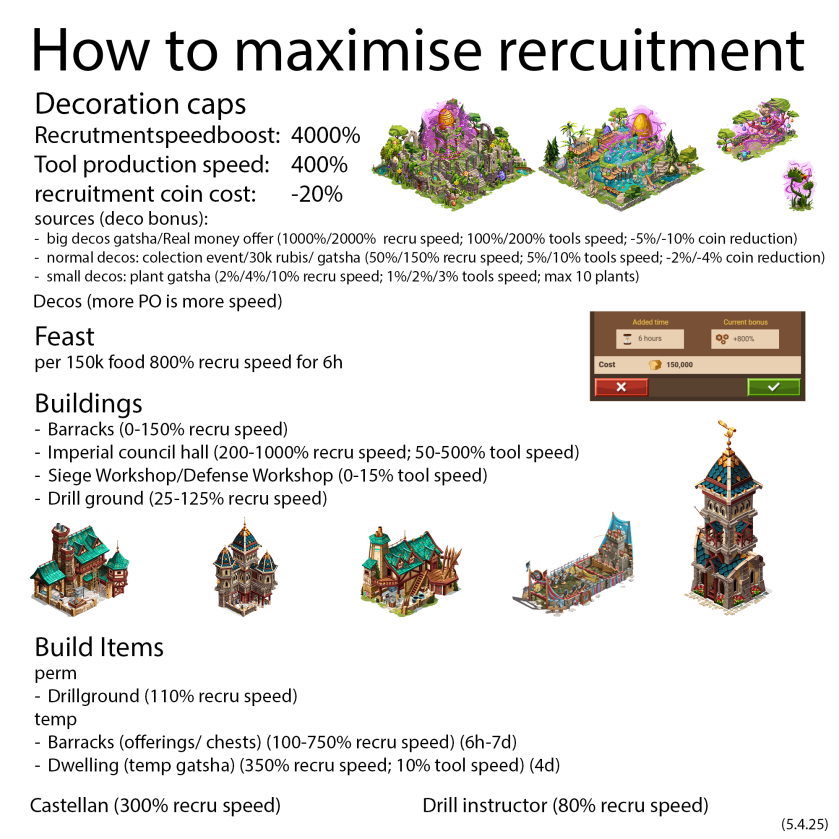

Everything that speeds up recruitment in one picture — decoration caps (4000% recruit speed / 400% tool production / −20% coin cost), the 150k-food feast, every building that contributes, and the permanent vs temporary build items.

The quick version
- Deco caps: +4000% recruitment speed, +400% tool production, −20% recruitment coin cost. Big gacha/offer decos give ~1000–2000% each; plant gacha smalls 2–4%.
- Feast: 150k food → +800% recruit speed for 6h. Run it before big queue dumps.
- Buildings: Barracks (0–150%), Imperial Council Hall (200–1000%), Siege/Defense Workshop (0–15% tool), Drill Ground (25–125%).
- Build items: perm Drillground (110% recruit). Temp: Barracks offerings/chests (100–750%, 6h–7d), Dwelling temp gatsha (350% recruit, 10% tool, 4d).
- Castellan 300% · Drill instructor 2,000%.